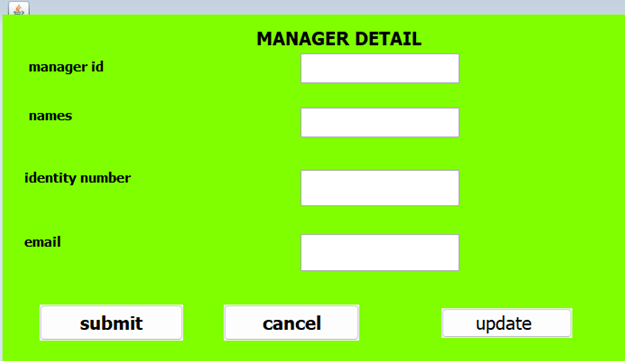
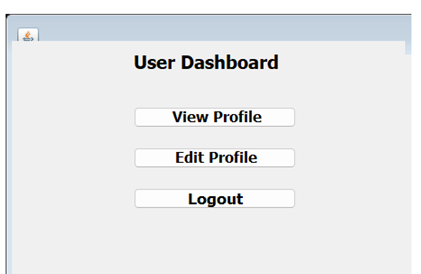

<html>
<head>
	<title>WORKERS FOR CONSTRUCTION RECRUITMENT</title>
</head>
<meta charset="utf-8">
<meta name="viewport" content="width=device-width,initial-scale=1">
<body bgcolor="gray">
    <p>
    	<center>
    	<ul style="list-style-type: none;  padding: 0;">
        <li style="display: inline; background-color:pink; margin-right: 10px"><a href="./home.html">HOME</a></li>
        <li style="display: inline; background-color:pink; margin-right: 10px"><a href="./about.html">ABOUT</a></li>
        <li style="display: inline; background-color:pink; margin-right: 10px"><a href="./contact.html">CONTACT</a></li>
        <li style="display: inline; background-color:pink; margin-right: 10px"><a href="./service.html">SERVICE</a></li>
        <li style="display: inline; background-color:pink; margin-right: 10px"><a href="./form.html">FORM</a></li>
        <li style="display: inline; background-color:pink; margin-right: 10px"><a href="./table.html">TABLE</a></li>
        <li style="display: inline; background-color:pink; margin-right: 10px"><a href="./my book.html">MY BOOK</a></li>
    </ul></center>

	</p>
	<h1>WORKERS FOR CONSTRUCTION RECRUITMENT</h1>
	<ol><h2><u><li>DATABASE</li></u></h2>
<ul type="square"><h3><u><i><li>Tables</li></i></u></h3>
<h3><u><i><li>Attributes</li></i></u></h3>
</ul>
<li><b> Registration form</b></li>
<p>This Java class represents an Admin Registration form for the workers for construction recruitment project, providing a user interface for admins to enter their details, register in the system, and connect to a MySQL database for data storage. The design incorporates styling elements for a visually appealing and user-friendly experience</p>
<li><b>log in form</b></li>
<p>This Java class represents an  Login form for the workers for construction  recruitment project, providing a user interface for admins to enter their login credentials, authenticate against a MySQL database, and access the admin home page upon successful login. The design incorporates styling elements for a visually appealing and user-friendly experience.</p>
<li><b>Employee information form  table</b></li>
<p> : Under this page the system admin will add, delete, or even update employee table in the system using generated information addition on that admin can view list of all registered employee whether those who are registered by admin, other system allowed users or these registered by employee on their own.</p>
<li><b> .The dashboard in the workers for construction recruitment table</b></li>
<p> The dashboard in the workers for construction recruitment project would serve as the main interface for users to view and manage information related to their properties needed to be construct. It would typically include various components such ast:
hammers A summary of all in the workers for construction recruitment project, showing key information such as device name, status (active/inactive), last seen location, etc.
</p>

<h3><u><i>ATTRIBUTES</i></u></h3>
 <h2><b>attributes of registration form</b><b></h2> here are the descriptions of the attributes/columns used in regisatration form</b>

 <p><b><i>Fname     : </i></b>first name</br>
<p><b><i>Lname       : </i></b>last name</b></p>
<p><b><i>Phone        :</i></b>phone contact</b></p>
<p><b><i>Gender   :</i></b>admin gender</b></p>
<p><i><b>Martial_status :</i></b>admin martial status</p>
<p><i><b>Dob         :</b></i> date of birth</p>
<p><i><b>Email        :</b></i>email of register</p>
<p><i><b>Password     :</b></i>admin password</p>

<h2><b>attributes of login form table</b></h2>
<p>
	<b><i>customerID    :</i></b>customer identification</p>
<p><b><i>Firstname     : </i></b>customer first name</p>
<p><i><b>Lastname     :</i></b>customer last name</p>
<p><i><b>Email        :</i></b>customer email</p>
<p><i><b>Phone      : </i></b>customer contact</p>

<h2><b>attributes of employee information</b></h2>

<p><i><b><p>manager idID : </i></b>number recrutiments</p>
<p><i><b>names ID :</i></b> identity names </p>
<p><i><b>identity number :</i></b> id number</p>
<p><i><b>email :</i></b> email used to login</p>
<p><i><b>
<h2><b>attributes dashbord</b></b></h2>
<p><p><i><b>view profile :</i></b> maintenance request identification number
<p><i><b>edity profile :</i></b> identification number of house</p>
<p><i><b>logout : </i></b>explanation of the issue to be fixed</p>

		<h2><u><li>JAVA</li></u></h2>
		
		<ul type="square"><h3><u><i><li>Description</li></i></u></h3>
			<p><li style ="display:inline; background-color :pink; margin -right:10px"> INTRODUCTION</li></p>
			<ol><li><b> JAVA PROGRAMMING</b></li>
				<p>In this chapter I will be describing how powerful generalpurpose programming language was used to create the analyzed system. Under this chapter I will undergo full detail of how everything will function together with database that have been describe above and how it cope with full analyzed system.</p>
				<p>
					<p><b>3.2 Tools used to develop this system in java programming:</b></p>
					<p><b><u>Eclipse IDE:</u></b> an integrated development environment used in computer programming. It 
contains a base workspace and an extensible plug-in system for customizing the 
environment. It is the second-most-popular IDE for Java development, and, until 2016, 
was the most popular.</p>
<p> 
<b>JAR </b>stands for <b>JAVA ARCHIVE .</b> it is a file format based on the popular zip file format and is used for aggregating many files into one . although JAR  can be used as a general archiving tool , the primary motivation for its development was so that java applets and their requisite component</p>
<p><b>MySQL Connectors.</b> MySQL provides standards-based drivers for <u>JDBC</u>,<u> ODBC,</u> and 
.Net enabling developers to build database applications in their language</p>
<p>Object-Oriented: Java is fundamentally object-oriented, meaning it revolves around the concept of classes and objects. Objects encapsulate data and behavior, promoting modular, reusable, and maintainable code.</p>
 
<p>Platform-Independent: One of Java's most significant features is its platform independence. Java programs are compiled into bytecode, which can run on any device with a Java Virtual Machine (JVM) installed. This "write once, run anywhere" capability makes Java highly portable across different operating systems and hardware architectures.</p>
 
<p>Robust and Secure: Java is designed with a strong emphasis on reliability and security. It incorporates features like automatic memory management through garbage collection, exception handling, and strict type checking to ensure robustness. Additionally, Java's bytecode verification process enhances security by preventing unauthorized code execution.</p>
 
<p>Multi-threaded: Java supports multithreading, allowing concurrent execution of multiple threads within a single program. This feature facilitates the development of responsive and scalable applications, making Java suitable for building server-side applications, graphical user interfaces (GUIs), and multimedia applications.</p>
 
<p>Rich Standard Library: Java comes with an extensive standard library (Java API) that provides ready-to-use classes and methods for various tasks. The Java API covers areas such as input/output (I/O), networking, database connectivity, graphical user interface (GUI) development, and more. This rich set of libraries simplifies development and accelerates the creation of Java applications.</p>
 
<p>Community Support and Ecosystem: Java benefits from a large and active community of developers, enthusiasts, and organizations. This vibrant ecosystem contributes to the continuous evolution of the language through updates, frameworks, libraries, and tools. Java's popularity and widespread adoption ensure ample resources, documentation, and support available for developers.</p>
 
<p>Used Across Diverse Applications: Java finds applications in a wide range of domains, including web development, enterprise software, mobile app development (Android), scientific computing, financial services, and more. Its versatility and scalability make it a popular choice for building large-scale, mission-critical systems.</p>
 
<li><b>	The Java programming environment consists of several components:</b></li>

<p>Java Development Kit (JDK): Provides tools for developing Java applications, including the Java compiler (javac), the Java Virtual Machine (JVM), and various utilities.</p>

<p>Integrated Development Environments (IDEs): Software tools that facilitate Java development by providing features such as code editing, debugging, and project management. Popular Java IDEs include Eclipse, IntelliJ IDEA, and NetBeans.</p>
<p>Java Runtime Environment (JRE): Includes the JVM and libraries necessary for running Java applications. It allows users to execute Java programs without needing the development tools provided by the JDK.</p>

<p>Java Application Programming Interface (API): A collection of pre-written Java classes and interfaces organized into packages. The Java API provides a vast array of functionality for tasks such as input/output operations, networking, GUI development, and more.</p>
 
<p>JDBC, which stands for Java Database Connectivity, is a Java API that allows Java applications to interact with relational databases. It provides a standard interface for connecting to relational databases and executing SQL queries. JDBC enables Java applications to perform database operations such as inserting, updating, deleting, and querying data.</p>
   <h2><bold><li>The steps involved in establishing connectivity using JDBC typically include:</li></bold></h2>
 
   <li><b> Import JDBC Packages:</b></li>
      <p>Import the necessary JDBC packages in your Java program. These packages include java.sql and specific database driver packages.</p>
 
   <li><b> Load and Register the JDBC Driver:
      <p>Use Class.forName( ) to dynamically load and register the JDBC driver for the specific database you're connecting to. This step is necessary to inform the DriverManager about the database driver.</p>
 
   ``<P>`java
      Class.forName("com.mysql.cj.jdbc.Driver");</p>
   
 
   <li><b> Create a Connection:</b></li>
      <p>Use the `DriverManager.getConnection( )` method to establish a connection to the database. You need to provide the URL of the database, username, and password.</p>
 
   ``<P>`java
   Connection connection = DriverManager.getConnection("jdbc:mysql://localhost:3306/your_database", "username", "password");</p>
   
 
   <li><b>Create a Statement:</b></li>
      <p>Create a Statement or PreparedStatement object to execute SQL queries. Statements are used for executing static SQL queries, while PreparedStatements are preferred for parameterized queries.</p>
 
   ``<p>`java
   Statement statement = connection.createStatement();</p>
   
 
   <li><b> Execute SQL Queries:</b></li>
      <P>Use the Statement or PreparedStatement objects to execute SQL queries and receive results.</P>
 
   <p>java
   ResultSet resultSet = statement.executeQuery("SELECT * FROM your_table");</p>
   
 
   <li><b> Process Results:</b></li>
     <p> Process the results obtained from the executed queries.</p>
 
   <li><b> Close Resources:</b></li></ol>
      <p>Close the ResultSet, Statement, and Connection objects to release resources and avoid memory leaks.</p>
 
   <p>`java
   resultSet.close();
   statement.close();
   connection.close();</p>
			              <h3><u><i><li>Forms and Images</li></i></u></h3>
        </ul>
		  

                          <b><i> employee form</i></b><br><br>
			              <br><br><br>


                          <b><i> Registration form</i></b><br><br>
			              <br><br><br>

                           
                           <b><i> Login form</i></b><br><br>
			              <br><br><br>

                          <b><i> Dashboard form</i></b><br><br>
			              <br><br><br>
                             
                          <b><i> 

        </ul>
		
	</ol>

        </ul>
		
	</ol>
	</ol>
	<marquee><u><i><h2 style="color: white;">Prepared By</i></u>:   ISHIMWE MURARA JEAN CLAUDE</h2></marquee>
	</body>
	</html>